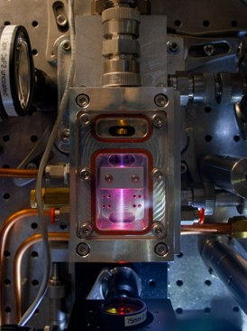
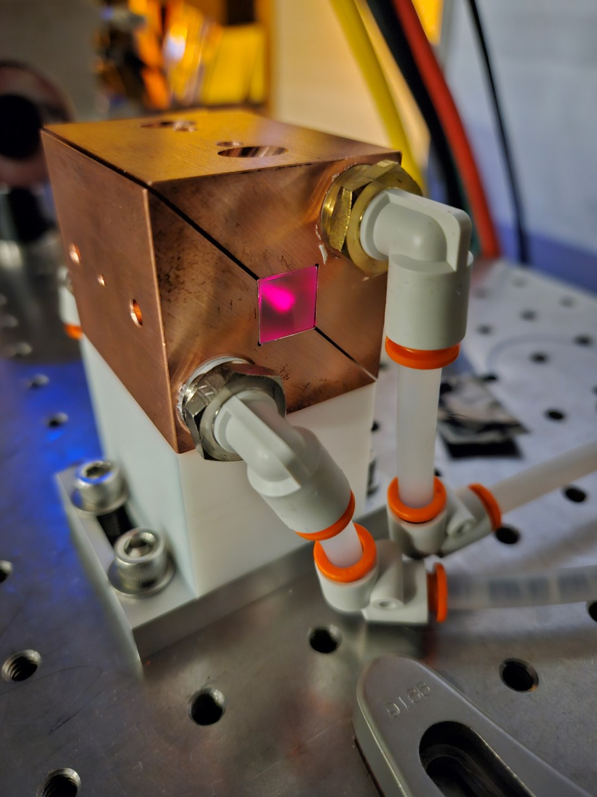
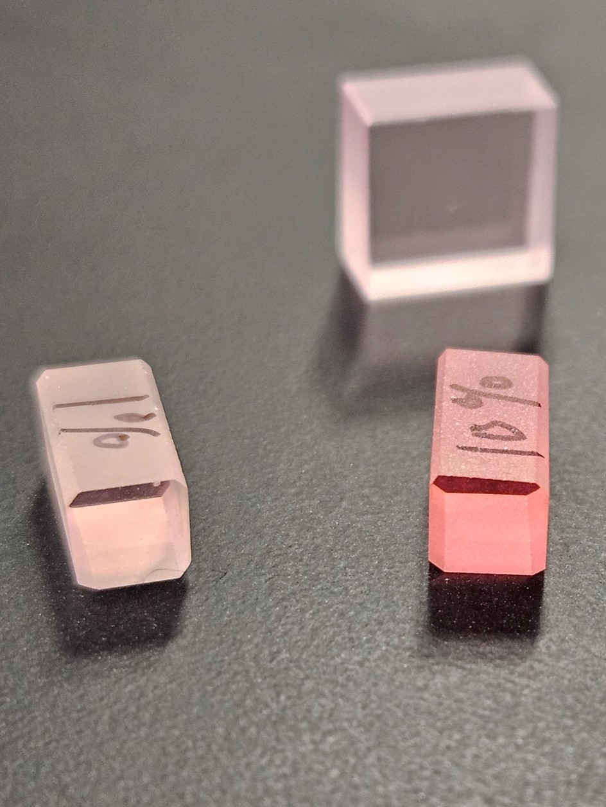
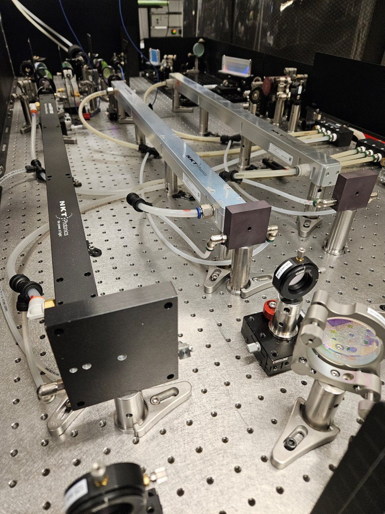

Research
Four current directions in the group, spanning tabletop X-ray sources to next-generation long-wavelength laser architectures.

Soft X-ray sourcesTabletop EUV & soft X-ray sources driven by a 1.5 µm and 3 µm OPCPA for ptychographic imaging at 10s nm resolution.

Quantum material studiesTabletop keV-class soft X-ray sources driven by a home-built 2 µm pumped (Ho:YLF), 3 µm OPCPA for quantum material studies.

High harmonic generationUltrafast, high energy 2 µm laser systems relying on Ho-doped materials for high harmonic generation and tabletop accelerators.

Beam combiningInvestigation of novel nonlinear beam combining methods for MHz, high average power, long wavelength laser systems.